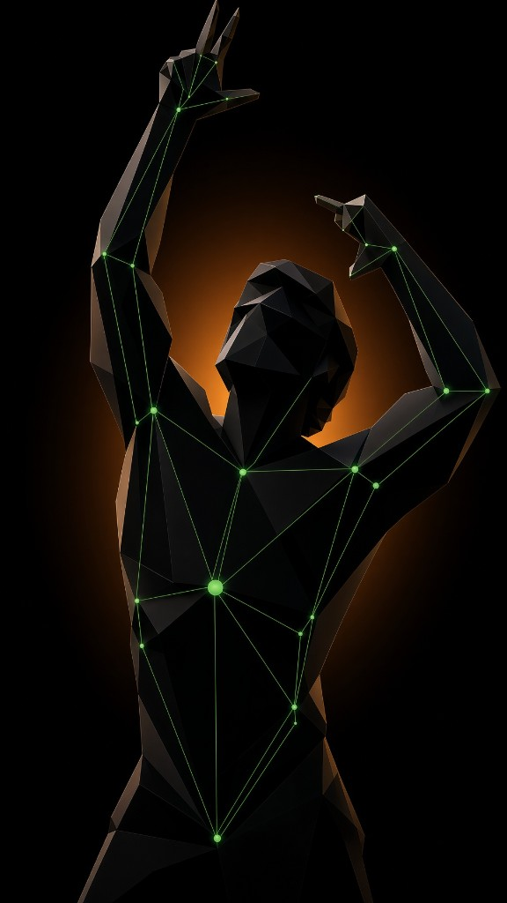

POSELOCK
Pose. Score. Lock.
Ta pose notée en direct, sur l’iPhone. La vidéo n’en sort jamais.
Exemple
LOCK
Le lock s’ouvre à 85. Tiens 1,5 s.
Pose
Le stickman suit tes angles. Vert : l’articulation est dans la tolérance.
- Pose
- Score
- Lock
41
Ouvre les coudes.
La caméra juge la ligne.
Stickman live, consignes du coach, rien d’autre. Le cadre passe au vert. Tu tiens. La photo se pose dans le journal.
- Score ≥ 85 pour ouvrir le lock.
- 1,5 s de tenue au vert.
Rien ne quitte l’iPhone.
- L’analyse tourne sur l’iPhone, avec Vision.
- La vidéo de séance n’en sort jamais.
- Aucun compte pour commencer.
Quatre catalogues. Un juge.
Scène
Mandatories Classic. Une ligne, un juge.
La même pose, un mois plus tôt.
Le journal met tes prises côte à côte. Les chiffres ci-dessous illustrent la fonction : ce ne sont pas les résultats de personne.
Exemple
Exemple
Pose. Score. Lock.
Gratuit : 3 locks par jour, le pack choisi à l’onboarding. Pro ouvre le plafond, les trois catalogues, le comparatif J-30, les rappels d’échéance et Zyzz.